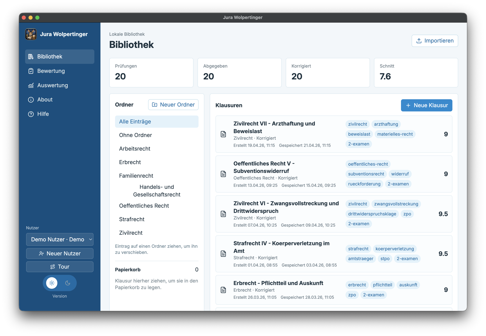
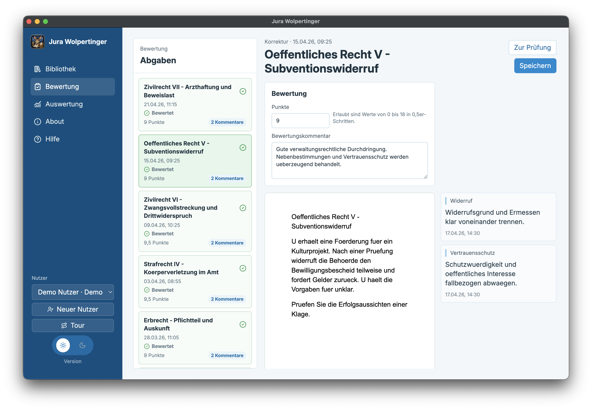
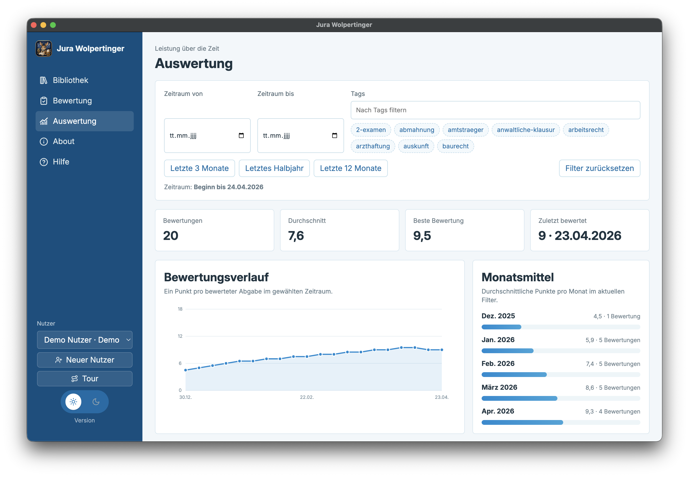
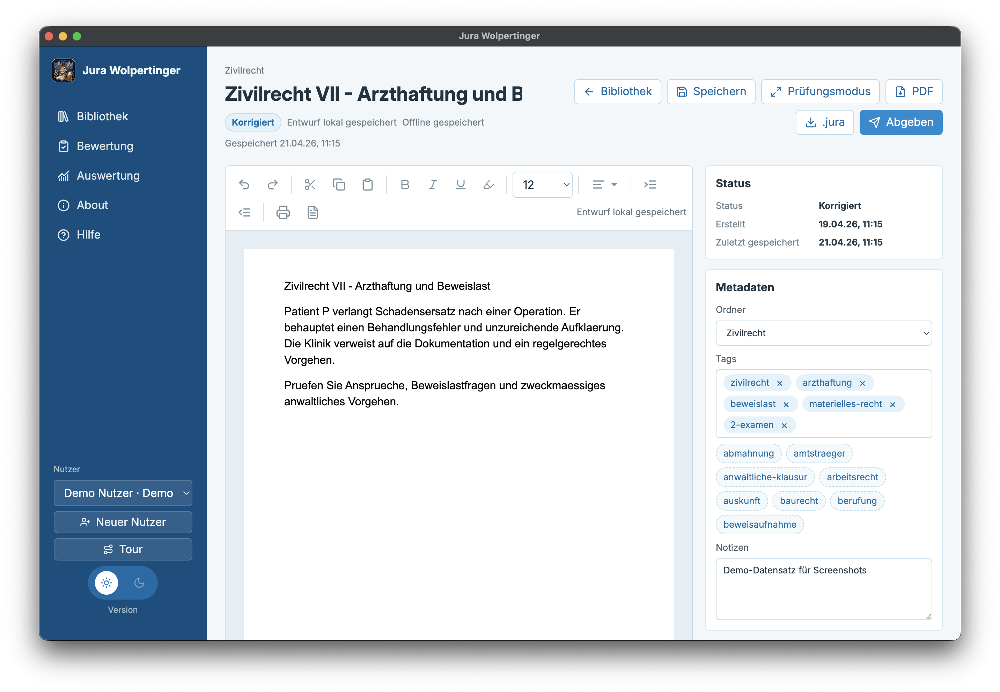
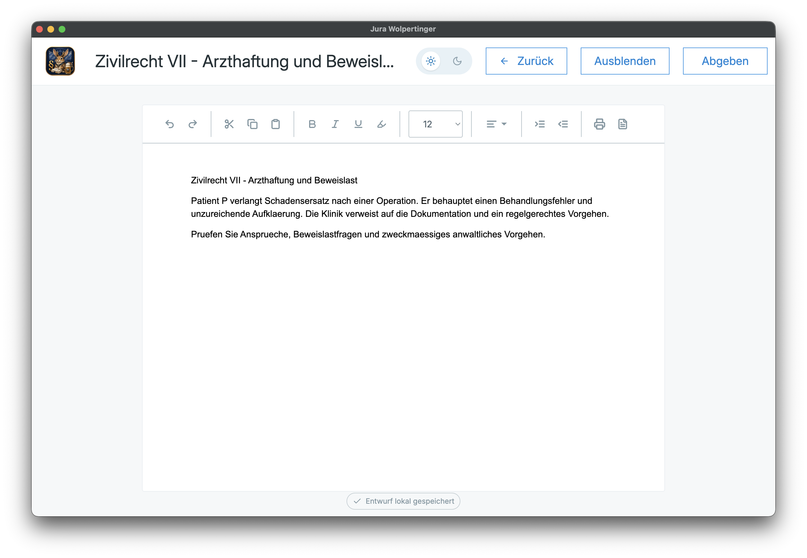

Schreiben
Prüfungsnaher Editor mit Fokusmodus, Autosave und lokal gespeicherten Revisionen.
Offline-ready Desktop-App
Jura Wolpertinger ist ein lokaler Arbeitsplatz für die juristische Examensvorbereitung: ruhig im Schreibmodus, präzise in der Bewertung und hilfreich bei der Auswertung deiner Entwicklung.
Arbeitsfluss
Prüfungsnaher Editor mit Fokusmodus, Autosave und lokal gespeicherten Revisionen.
Abgaben werden als fester Snapshot gespeichert, während der Entwurf weiter bearbeitet werden kann.
Gesamtbewertung nach Bayern `0-18`, Randkommentare und Textmarkierungen direkt im Dokument.
Tags, Zeitraumfilter und Charts zeigen, welche Rechtsgebiete und Themen besser werden.
Einblick
Die Demo-Daten zeigen den typischen Arbeitsfluss: Bibliothek organisieren, Klausuren schreiben, Abgaben bewerten und Fortschritt auswerten.





Lokal gespeichert
Deine Klausuren liegen lokal auf deinem Rechner. Die App ist darauf ausgelegt, dass Entwürfe, Abgaben, Bewertungen und Anhänge auch nach Neustart, Stromausfall oder App-Absturz verfügbar bleiben.
Releases
Wir erkennen dein Betriebssystem automatisch und verlinken auf die passenden Dateien des neuesten GitHub Releases. Hinweise zu Plattformwarnungen, Signaturen und Installation stehen in der Anleitung.